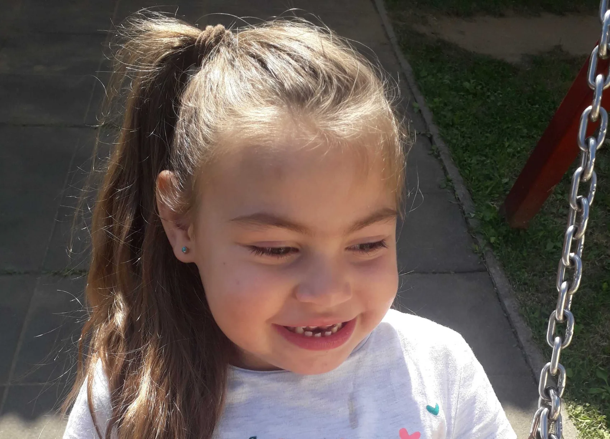
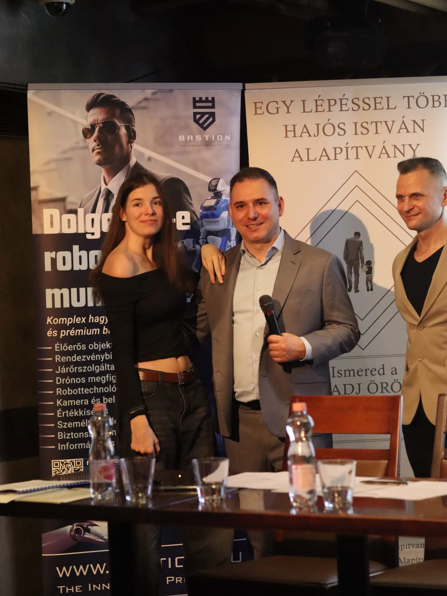
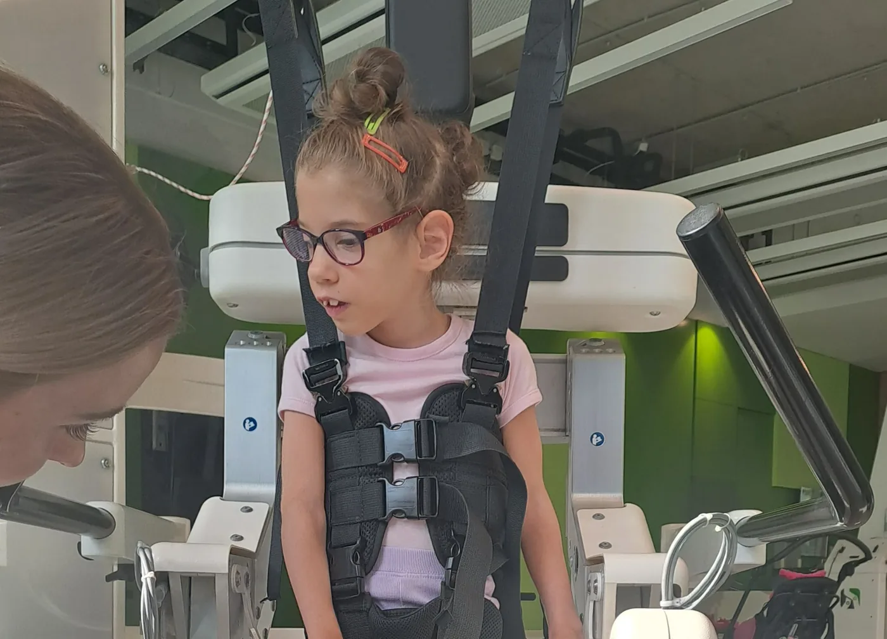
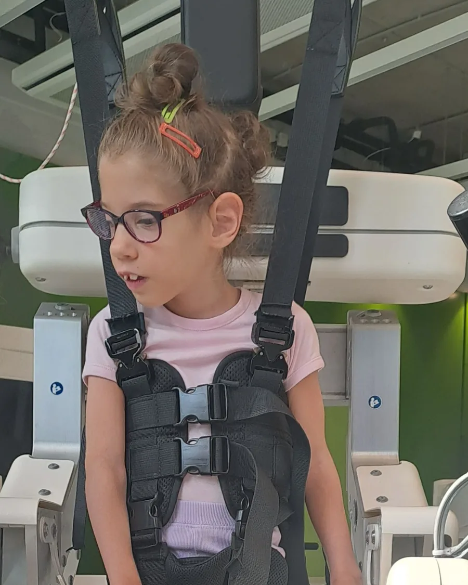
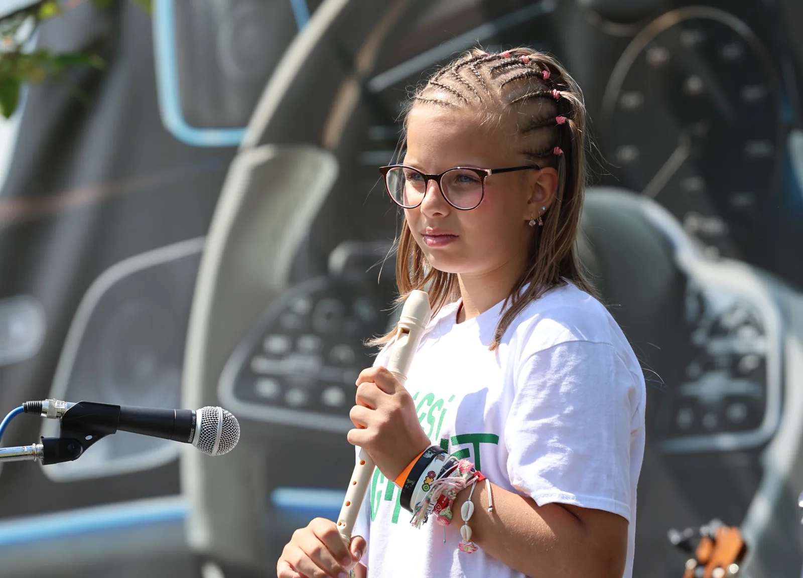

Minta profil
[Minta név] – Bence családja
Bence 4 évesen kapott ritka izombetegség diagnózist. A napi gyógytorna és a speciális segédeszközök komoly anyagi terhet jelentenek a családnak. [MINTA TARTALOM]
Támogatom ezt a családot


Egy Lépéssel Több Alapítvány
Rászoruló, beteg vagy fogyatékkal élő gyermeket nevelő családokat kötünk össze támogatókkal. Egy rendszeres havi felajánlással stabil, kiszámítható segítséget nyújthatsz pontosan akkor, amikor a legnagyobb szükség van rá.
Küldetésünk
Alapítványunk szervez és becsatlakozik egyéni és eseti gyűjtésekbe is, de fő célunk más: a „Fogadj örökbe egy családot” programunk egy rendszeres, havi rendszerességű támogatást tesz lehetővé, amellyel egy rászoruló családot segíthetsz. Nem egyszeri adományról van szó, hanem folyamatos, kiszámítható háttérről, amire a családok hónapról hónapra számíthatnak.
Fogadj örökbe egy családot
Az alábbi profilok bemutatják, hogyan jelennek meg a családok történetei az oldalon.
⚠ Minta profilok — MINTA TARTALOM, a valódi, jóváhagyott családtörténetekkel és fotókkal kell helyettesíteni az éles indulás előtt.
Bence 4 évesen kapott ritka izombetegség diagnózist. A napi gyógytorna és a speciális segédeszközök komoly anyagi terhet jelentenek a családnak. [MINTA TARTALOM]
Támogatom ezt a családot
Zsófia koraszülöttként jött világra, azóta rendszeres fejlesztő terápiákra jár. A havi támogatás segít a szakorvosi vizsgálatok költségeinek fedezésében. [MINTA TARTALOM]
Támogatom ezt a családot
Dávidnál kisiskolás korában krónikus szívbetegséget diagnosztizáltak. A család a gyógyszerek és a rendszeres kontrollvizsgálatok költségeivel küzd. [MINTA TARTALOM]
Támogatom ezt a családot
Luca mozgáskorlátozottan született, mindennapjait kerekesszék és rendszeres gyógytorna segíti. A támogatás új, testhezálló segédeszközök beszerzését tenné lehetővé. [MINTA TARTALOM]
Támogatom ezt a családotHogyan működik?
Ismerd meg a valós, ellenőrzött történeteket, és találd meg azt a családot, amelyiké megérint.
Állíts be egy olyan rendszeres összeget, ami neked is kényelmes – minden forint számít.
Rendszeres frissítéseket kapsz arról, hogyan segít a támogatásod.
Kövesd nyomon, ahogy a család egyre stabilabb talajra kerül – lépésről lépésre.
Támogatott területek
Beteg gyermekek családjai
Állatvédelem
Sport
Egészségügy
Oktatás
Közösségünk
⚠ Az alábbi nevek és logók általános helykitöltők — az éles indulás előtt valós, jóváhagyott nagykövetekre és partnerekre kell cserélni.

Nagyköveteink
[Nagykövet neve]
[Beosztás / szerepkör]
[Nagykövet neve]
[Beosztás / szerepkör]
[Nagykövet neve]
[Beosztás / szerepkör]
[Nagykövet neve]
[Beosztás / szerepkör]
Kiemelt partnereink
Nyilvánosságra hozzuk pénzügyeinket és jogi nyilvántartási adatainkat, hogy mindig pontosan tudd, hova kerül a támogatásod.
Csatlakozz rendszeres támogatóink közösségéhez, és segíts, hogy egy család újabb lépést tehessen előre – minden egyes hónapban.
Legyél havi támogatóKapcsolat
Keress minket bizalommal az örökbefogadási programmal vagy a támogatással kapcsolatos kérdéseiddel.